Константин Колесниченко, 2008
***Истоки***
Музыканты техасского блюза славны не только стетсоновскими шляпами.
По истории развития блюза Штата Одинокой Звезды можно проследить путь
всего жанра в целом: от акустической довоенной музыки до ревущих гитар
блюз-рока.
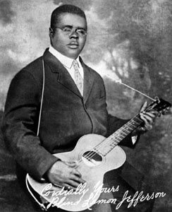
Пожалуй, старейшими
музыкантами этого жанра можно считать Blind Lemon Jefferson, Manсe Lipscomb,
Blind Willie Johnson, Alger "Texas" Alexander - тех, что имеют характерный
техасский музыкальный почерк и на слуху даже у начинающих любителей блюза.
Каким бы анекдотичным в настояшее время ни было имя
Blind
Lemon Jefferson - судьба его совсем не веселая - настоящий блюз.
Замечу, что блюзовые музыканты, особенно того, таинственного и далекого
времени, редко были привязаны к одному месту. Среди всего прочего,
блюз - это также музыка скитаний и тяжелой судьбы. Путешествия музыкантов
- одна из распространенных тем для блюзов. Blind Lemon Jefferson уроженец
Техаса, но карьеру свою он построил в Чикаго - в одном из самых важных
музыкальных центров Америки того времени. Будучи слепым, он все равно
оставался странствующим музыкантом. Его манера игры останется мягкой
и характерно южной на протяжении всей недолгой карьеры. Ослепнув в
раннем детстве, Blind Lemon Jefferson стал мастерским и востребованным
гитаристом, что позволяло ему жить даже в некотором подобии роскоши.
По одной из типично блюзовых легенд Jefferson погиб, замерз намертво,
брошенный в одном из своих авто.
Главным инструментом техасского блюза была и есть гитара. На этом инструменте
играл и уличный евангелист Blind
Willie Johnson и фермер Mance Lipscomb. А вот странствующий певец
Alger "Texas" Alexander на
гитаре играть не умел, но носил ее с собой на случай, если подвернется
стоящий аккомпаниатор.
***Пионеры электрогитары техасского блюза***
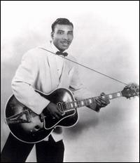
В начале 40 годов музыка
менялась: появились первые электрогитары, а следовательно, и первые музыканты,
играющие на этом инструменте. Одним из первопроходцев электрогитары был
Aaron Thibeaux Walker, который взял себе сценическое прозвище
T-Bone
Walker. В детстве он был поводырем Blind Lemon Jefferson, у которого
и получил первые уроки блюза. Стиль и манера игры Walker оказали влияние
на огромное количество музыкантов, не только в Техасе. Большую часть
своей карьеры T-Bone построил в Калифорнии, потому его композиции "Strollin'
With Bones", "Blue Mood" и др. - это классика West Coast Blues. T-Bone
создал особый, характерный для техасского блюза, подход к музыке, основанный
на свинге, особой роли певца-гитариста, а также присутствию духовой
секции.
Вслед за Walker в 40-х годах 20 века на сцену взошла целая плеяда техасских
гитаристов, вдохновленных его открытиями и нововведениями: Pee Wee Crayton,
ZuZu Bolin, Peppermint Harris и др. Наибольшей популярности, позволившей
выйти из тени великого мастера и выработать свой неповторимый стиль,
достигли Clarence Gatemouth Brown и Lowell Fulson.
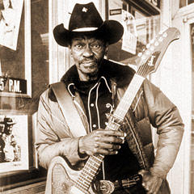
Само появление Clarence
Gatemouth Brown на большой сцене - это уникальная блюзовая легенда.
Согласно истории, Clarence пришел на концерт T-Bone Walker в популярный
блюзовый клуб и примостился недалеко от сцены. Во время концерта
музыканту-звезде понадобилось покинуть сцену, тогда на нее быстренько
выскочил молодой и неизвестный гитарист (угадайте, кто), который,
представившись, заиграл не хуже мастера, чем вызвал небывалый ажиотаж
у публики. На протяжении всей своей карьеры Браун придерживался утверждения: "я не играю блюз,
я играю американскую музыку" - и это сущая правда, музыка Clarence
Gatemouth Brown - это сочетание подлинно американских жанров музыки:
блюз, джаз, кантри, кейджун и др. Он часто играет на скрипке, помимо
гитары, на своих выступлениях и записях.
Lowell Fulson нельзя
назвать в полной мере техасским блюзменом, но значительную часть своей
карьеры он осуществил в Штате Одинокой Звезды, да и влияние на его
манеру игры T-Bone Walker неоспоримо. Он был одним из аккомпаниаторов
Alger "Texas" Alexander,
а также именно он является автором знаменитых блюзовых хитов "Three O'Clock
Blues" и "Reconsider Baby".
Техасский свингующий блюз славен не только гитаристами, паралелльно
развивалась и школа игры на фортепиано. Самыми популярными пианистами
в то время были: Floyd Dixon, Ivory Joe Hunter и Robert Shaw.
***Lightnin' Hopkins***
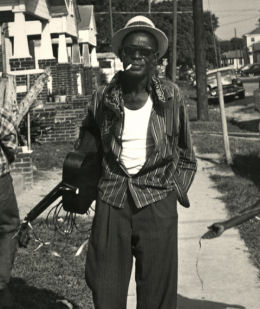
Несмотря на набиравшую обороты
электрическую музыку, в Техасе все еще оставались адепты акустической
гитары, музыканты продолжавшие традицию Blind Lemon Jefferson, Mance
Lipscomb и др. Самым ярким, известным и самобытным в Штате Одинокой звезды,
одним из важнейших блюзовых трубадуров за всю историю жанра был
Sam
Lightnin' Hopkins. Лайтнин Хопкинс был блюзменом по сути и по форме.
Чтобы это можно было представить, достаточно бегло пробежаться по его
биографии. С раннего детства Сэм был окружен музыкой, потому не мудрено,
что как только появилась возможность стать поводырем знаменитейшего
Blind Lemon Jefferson, мальчик тут же воспользовался этим. Ему повезло
также и с тем, что Alger "Texas" Alexander был его двоюродным братом,
потому часть своих юношеских лет он провел странствуя по городам и
местечкам с этим знаменитым блюзовым певцом. Успех начал приходить
к Хопкинсу в 40-х годах, когда он уже стал достаточно знаменитым и
мастерским музыкантом. Игра на гитаре Sam Lightnin' Hopkins не была
новаторской или сверхвиртуозной, но это было именно то исполнение,
нужный подход для сопровождения его блюзов. Лайтнин Хопкинс играл не
только на гитаре, в своей музыке он также использовал фортепиано. Записывался
и выступал он также в сопровождении ансамбля.
Andrew Smokey Hogg в довоенное время тоже большей частью играл акустическую
музыку, это была смесь блюзов и регтаймов. Похожую музыку играл Big
Bill Broonzy в Чикаго. Позже он освоил электрогитару и записал несколько хитов,
но большой популярности не достиг.
В 40-х и 50-х в блюзе доминировал чикагский стиль - жесткий и бескомпромиссный,
не удивительно, что это повлияло на стиль игры многих музыкантов, в том
числе и в Техасе. Например, Juke Boy Bonner играл в стиле Джимми
Рида - используя гармонику в холдере и незамысловатые гитарные аккорды, а
Hop Wilson был техасской версией Elmore
James, Hound Dog Taylor и J.B.
Hutto в одном флаконе. Именно на стыке техасского свинга, музыки соул
и новых веяний чикагского блюза стала появляться новая ветвь жанра. Albert
Collins, Freddie King, Johnny
Copeland, Joe Guitar Hughes, Phillipp Walker,
Long John Hunter, Big Mama Thornton, Bobby Blue Bland, Z.Z. Hill, Guitar
Shorty - это все герои новой волны техасского блюза.
***Второе дыхание техасского блюза***
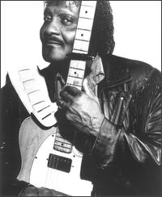
Техасский блюз всегда
больше ориентировался на гитару, чем на какой-либо другой инструмент.
Albert
Collins (он был двоюродным братом другого известного техассца - Лайтнин
Хопкинса) стал во главе нового витка в развитии техасского гитарного
блюза. Выросший в деревне и гетто Хьюстона, он с детства занимался музыкой
- он увлекался джам-блюзом, а если быть точнее, техасской его версией,
потому любимыми его гитаристами были T-Bone Walker и Clarence Gatemouth
Brown. Именно под их влиянием он и создает свой гитарный стиль. Удивительно,
но совсем рядом, в том же гетто, похожие университеты проходили
Johnny
Copeland и Joe Guitar Hughes. На ранней стадии своей карьеры Альберт
Коллинз выбрал сначала скваеровскую копию Телекастера, а потом и оригинал
этой гитары, потому его часто называют - мастер Телекастера. Но больше
всего при упоминании его имени используют всевозможные прозвища, связанные
со льдом и холодом (The Iceman) - именно таким был звук его перестроенной
гитары - резкий и пронизывающий. Коллинз оказал большое влияние на свое
поколение музыкантов, а также на огромное количество блюз-роковых гитаристов
родом из Техаса. Для музыки Albert Collins характерно жанровое разнообразие
- свинг, приджазованный блюз, соул, фанк.
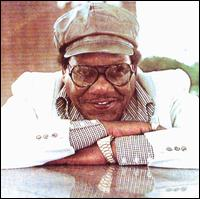
Можно сказать, что большинство
гитаристов, родившихся в 30-е в Техассе, испытали на себе влияние трех
музыкантов T-Bone Walker, Clarence Gatemouth Brown и Albert Collins,
такими были и Long
John Hunter, и прибывший в Техас из Луизианы Philip Walker и Guitar
Shorty, который нашел свой собственный компромисс между блюзом и музыкой
соул.
Техасский стиль был изначально более деликатным, чем любой другой из
блюзового набора, потому именно оттуда вышла целая череда замечательных
вокалистов ориентированных больше на соул и ритм-н-блюз, чем на жесткое
пение чикагского блюза. Пожалуй, первым и самым важным из них является
Bobby
Blue Bland. Удивительно, как этот музыкант смог пробиться в первый
эшелон и достичь большой популярности, не играя на гитаре, но факт остается
фактом: Bobby и по сей день остается одним из основополагающих вокалистов
блюза. Big Mama Thornton тоже родом из Техаса, равно как и потрясающий
вокалист Z.Z. Hill.
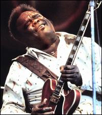
Говоря о Техасском блюзе,
не стоит забывать о еще одном его гитарном короле -
Freddie
King! Спорный вопрос, насколько Фредди Кинг является техасским гитаристом,
потому что он покинул этот штат в возрасте 16 лет (в зрелом возрасте
он вернется в Техас, поселится в Далласе), но к этому времени он уже
был мастерским гитаристом. Но все же его стиль я отнес к Вест Сайд блюзу,
сродни Отису Рашу, Мэджик Сэму и
Бадди
Гаю - тем гитаристам, которые
изменили эту музыку и в какой-то степени приблизили ее к року. В Чикаго
Фредди работал сессионным музыкантом, в том числе и на Chess, а также
вел активную, но не особо заметную концертную деятельность. Настоящий
успех к нему пришел после записи инструментала "Hide Away" - поппури
из блюзовых фраз, а также рифа из пьесы ("The Peter Gunn Theme") главного
голливудского композитора тех лет Henry Mancicni. Но потом коммерческий
успех Фредди Кинга стал сходить на нет и вернулся лишь на волне интереса
к нему молодых блюз-рокеров. Одним из первых был Эрик
Клэптон. Позже
Кинг начинает сотрудничать с знаменитым клавишником Leon Russell и на
его же лейбле записывает подряд 3 альбома, в которых демонстрирует новый
и современный подход к блюзу. Большей частью этим он обязан именно Расселу.
Жизнь подлинно блюзового короля оборвалась внезапно, сразу после одного
из концертов в 1976 году. Ему было всего 42 года.
***Блюз-рок и СРВ***
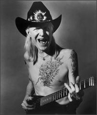
Куда без блюз-рока в 60-е?
В Чикаго - Пол
Баттерфилд, Майкл
Блумфилд, Масселвайт и др, тут и там
возникают группы такой направленности: Canned
Heat, Allman
Brothers Band,
даже в Англии полно таких ансамблей. Есть такие музыканты и в Техасе!
Блюз-рок - это преимущественно музыка белых, и как ни удивительно, одним
из первых техасских блюз-рокеров стал Johnny
Winter. Он был не просто белым, он был белым в кубе - альбинос, да
и фамилия вполне ассоциируется с этим цветом. Джонни и его брат (тоже
альбинос) Эдгар с детства были очень музыкальными детьми. К 14 годам
Джонни уже играл на гитаре в собственной группе, в которой нашлось место
и его младшему брату (клавиши). С переменным успехом Винтер играет музыку,
основанную на блюзе до 1968 года. Вскоре, после похвальной статьи в авторитетном
журнале Rolling Stone, он становится популярным и известным настолько,
что с ним подписывает контракт фирма Columbia и известный нью-йоркский
владелец клуба Steve Paul. Контракт был подписан на немыслимую по тем
временам сумму - 300 000$! Потом следуют многочисленные концерты этого
одаренного гитариста-виртуоза на больших площадках, в том числе и на
Woodstock. Купаясь в лучах славы и успеха, и так не сильно здоровый физически
Винтер становится наркоманом. Впрочем, это не мешает ему выпускать, хоть
и с перерывами, но весьма успешные и хорошие альбомы. Джонни также был
инициатором новой волны интереса к Muddy
Waters, записав с последним
несколько альбомов. Винтер записывается и до сих пор выступает но по
сравнению с другими своими моложавыми коллегами-одногодками, этот татуированный
с ног до головы альбинос выглядит глубоким старцем. Подорванное наркотиками
в молодые годы здоровье дает о себе знать.
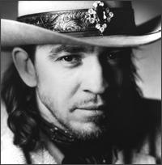
Сложно предположить, каким бы был
блюз, не появись на сцене Stevie
Ray Vaughan. С одной стороны, он поднял интерес к блюзовой музыке
в 80-х, а с другой - изменения, которые он привнес в эту музыку, хорошенько "выбелили" ее.
Техасский блюз всегда был ориентирован на гитару больше, чем на какой-либо
другой инструмент, но после СРВ в массовом сознании он ассоциируется
именно с гитарным мастерством, а не с вокалом, свингом, не говоря уже
об акустической музыке.
Стиви был музыкальным ребенком, примером для подражания он выбирает
своего старшего брата, также играющего на гитаре - Jimmie Vaughan. Свою
первую группу он создает уже в начале 70-х. Именно с этого времени начинается
его непростой путь к вершине своей карьеры. В 1983 году выходит первый
альбом его группы "Double Trouble", который получает одобрительную критику
в соответствующих музыкальных изданиях. Затем следуют еще 2 более успешных
коммерчески, но на мой взгляд, менее интересных музыкально альбов. Работая
над ними он находится в глубокой алкогольной и наркозависимости. Но Стиви
был силен не только в игре на гитаре, но и морально, он выстоял, вылечился
и альбом "In Step" был записан уже здоровым человеком. Стиви Рей становится
национальной звездой, участвует в концертах известных музыкантов, у него
появляется толпа поклонников. Но 27 августа 1990 года жизнь СРВ трагически
оборвалась - вертолет Эрика Клептона, в котором с концерта возвращался
Стиви, врезался в скалу.
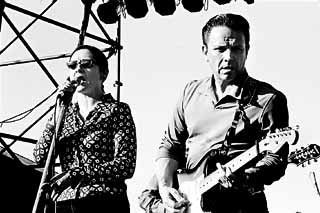
Менее
известный, чем его младший брат Стиви, Jimmie
Vaughan, тем не менее и сам является довольно авторитетной фигурой
в современном блюзе. Вместе с харпером Kim
Wilson он является основателем
знаменитой группы "Fabulous Thunderbirds". Большинство звезд техасского
блюза, поколения 50-х годов, в той или иной степени связано с братьями
Vaughan - вокалистка Lou Ann Burton, гитарист и вокалист W.C. Clark,
певица Angela Strehli, барабанщик Doyle Bramhall.
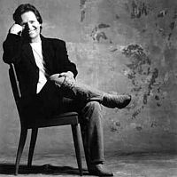
Было бы неправильным обойти
вниманием Delbert
McClinton - его нельзя назвать чисто блюзовым музыкантом, да и на
протяжении своей карьеры он был как бы вне течений техасского блюза,
но его репертуар - это корневая американская музыка, в рамках которой
находится место и блюзу родом из Штата Одинокой Звезды.
Современная техасская сцена в большей степени ассоциируется с последователями
Стиви Рея. Часто это жесткие и стремительные трио музыкантов, на мой
взгляд, порой зыбывающие о музыкальности, взамен скоростной игре на гитаре.
Но такое состояние, на самом деле, разбавлено присутствием музыкантов
старой школы, приверженцев более свингующей игры, а также музыкантами
моложе, играющих свою музыку: Tutu Jones, Anson Funderburgh & The Rockets,
Omar
And The Howlers, Smokin' Joe Kubek & B'nois King (хотя в этом случае
не обошлось без заметного влияния блюз-рока).
Константин Колесниченко для blues.ru